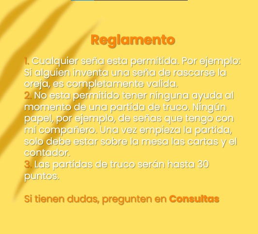

¡Felicidades a ??? por ganar el Truco CUP® y llevarse a casa 2 paquetes de pochoclos!
Partidos
R1: Lolo y Enzo vs. Isa D y Cata
Ganadores: Lolo y Enzo
Resultado: 30p - 4p
Descripción del partido: Lolo y Enzo dominaron el juego desde el principio, asegurando una victoria temprana contra Isa D y Cata.
R1: Justina y Sol vs. Franco y Guti
Ganadoras: Justina y Sol
Resultado: 30p (24) - 17p
Descripción del partido: Justina y Sol mantuvieron una ventaja constante en todo el juego, asegurando una victoria sólida contra Franco y Guti.
R1: Pedro y Juan vs. Letti y Mati
Ganadoras: Pedro y Juan
Resultado: 30p (16) - 7p
Descripción del partido: En general, fue un partido intenso y reñido, donde ambas parejas demostraron su talento y pasión por el truco, pero al final del día, la victoria se inclinó a favor de Pedro y Juan, quienes mostraron una gran destreza y habilidad.
R1: Rezo y Lucas vs. Luca y Aga
Ganadoras: Pedro y Juan
Resultado: ...
El partido fue emocionante de ver, con largos intercambios de golpes y algunas jugadas espectaculares. Rezo y Lucas salieron victoriosos, celebrando su gran desempeño, aunque ambos equipos se esforzaron mucho.
Reglas
Premios
El ganador se llevará 2 paquetes de pochoclos.